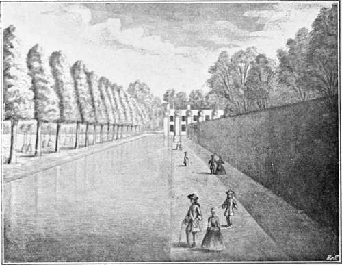
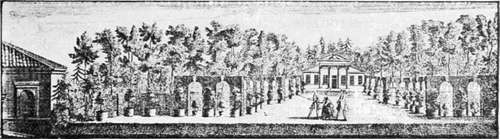

Seventeenth Century. Part 7
Description
This section is from the book "A History Of Gardening In England", by Alicia Amherst. Also available from Amazon: A History Of Gardening In England.
Seventeenth Century. Part 7
The introduction of foreign tender plants led to the gradual growth of conservatories and hothouses. In a previous chapter I noticed some hints Sir Hugh Platt gave for the protection of delicate plants during the winter. In the second part of his work, first printed in 1660, he not only thinks of protection, but has also a feeble idea of forcing, an art which did not develop until many years later. He writes, "Quaere, If pease beans pompeons musk mellons, and other pulse seeds, put in small pots . . . and placed in a gentle stove or some convenient place aptly warmed by a fire and then sown in March or April would they come up sooner?" Again he says, "why not utilize a kitchen fire planting them (i.e. apricots or vines) near a warm wall, or brewers, diers, soap boilers or refiners of sugar, who have continual fire, may easily convey the heat of steam of their fires (which are now utterly lost) into some private room adjoining wherein to bestow their fruit trees".
Attention was now turned to growing oranges, and the houses built for the shelter of these trees are the earliest kind of conservatory. Very far removed from the modern glass structure, they were like large rooms with big windows and a stove or open fire to warm it in the coldest time, or " in default of stoves or raised hearths you must attemper the air with pans of Charcole." * The oranges were planted in cases, and were lifted out to adorn the garden during the summer months, but were " committed betimes into the conservatory." No garden was complete without its "collection of choice greens." Already in the time of Charles I. there existed several orangeries. At Wimbledon, the favourite resort of Henrietta Maria, was one of the finest examples. The orange garden was laid out " in four knots," bordered with box, and turfed squares with walks round them. In this the oranges stood out in tubs in the summer time, and there was a garden house in the orangery, where the trees, forty-two in number, were stored for the winter. These trees were valued, when the Parliamentary survey was made prior to selling the place, at £420. The survey of these grounds forms a very complete picture of a garden of this date, the various terraces, trees, walks, summer-houses and everything it contained being carefully described and valued.*
* Rea, Flora, Ceres and Pomona, 1665, also Sharrock.
After the Restoration, conservatories became more general, and are noticed by several of the writers of the time. There were houses built for the reception of "tender greens" at the Oxford Botanic Garden, and later on at Chelsea Physic Garden. The gardens of Essex House in the Strand possessed a fine collection " of choicest greens," under the care of John Rose, one of the most celebrated gardeners of that day. His treatment of plants in cases is thus quoted by Rea :—In spring and autumn you must take some of the earth out of the cases, and open the rest with a fork or other fit tool ... fill up again with rank earth two parts dung well rotted." That orange-trees, however, were still considered a great novelty, the following extract from Pepys' Diary will show:—"25 June 1666. Mrs. Pen carried us to two gardens at Hackney (which I every day grow more and more in love with) Mr. Drake's one, where the garden is good, and house and prospect admirable, the other my Lord Brooke's, where the gardens are much better, but the house not so good nor prospect good at all. But the gardens are excellent, and here I first saw oranges grow, some green, some half, some a quarter, and some full ripe, on the same tree, and one fruit of the same tree do come a year or two after the other; I pulled off a little one by stealth (the man being mightily curious of them) and eat it, and it was just as other little green small oranges are—as big as half the end of my little finger. Here were also a great variety of other exotique plants, and several Labyrinths, and a pretty aviary." He visited this garden on a former occasion, May 8th, 1654, and says of it:—" One of the neatest and most celebrated in England," but either the oranges were not there then, or he did not see them.
Orangerie and canal, euston. from a sketch by edmond prideaux, c. 1716. †
* Printed in Archceologia, Vol. X, 1789. Reprinted in an Appendix to this volume from original MS. in the Record Office, Parliamentary Survey, No. 72.
† In the possession of Charles Glynn Prideaux Brune. Esq.
Orangerie at chiswick. from an engraving ey rocque, 1736.
Gardeners seem to have understood that a certain amount of air was necessary for plant life, but I think they by no means realized the power of light. Sharrock, writing on the subject, comes to the conclusion that " the coldness and briskness of the free air . . . produces verdure," and to prove this, he takes for example flowers shut in rooms, the leaves of which become paler, and the "whiting the leaves of Artichokes, Endive, Mirrhis Cichory, Alexander, and other plants, which is done by keeping them warm without the approach or sentiment of the cool fresh aire." It is to be wondered how they got delicate plants to live by sheltering them in dark places during the winter months. " Some defend their Mirtles, Pomegranates and such other tender Plants, either by houses made of straw like Bee hives, or of boards (with inlets for the sun by casements, or without them) Litter of Horse Stables being laid in very cold weather about the houses of defence".
Le Notre was invited to England by Charles II., and it has generally been believed that he accepted the invitation, and that St. James's Park, as well as alterations at Hampton Court and Whitehall, were made from his designs, and under his direction. In 1661 a certain Adrian May was appointed by Royal Warrant, " supervisor of the French gardeners employed at Whitehall, St. James, and Hampton Court, to examine their bills, etc, and see that they have due satisfaction." This shows it is a fact that Frenchmen were employed, if not the great Le Notre himself, Perrault, or some of his pupils. Switzer in 1718 mentions Perrault's visits to England, but says nothing of the coming of Le Notre. Jean de la Quintinye, who was the great French gardener and fruit grower, as Le Notre was their chief garden architect, certainly visited England, and gave hints to and corresponded with the principal Englishmen of rank who followed the fashion, and were lovers of gardens. His works were translated by Evelyn and London and Wise, and were quite the standard books in England, and his illustrations of the manner of grafting and pruning, are admirable. Rose, who was considered the best practical gardener of his time, was sent by the Earl of Essex to study at Versailles, and on his return he was appointed Royal Gardener by Charles II. Thus the French influence was strong in England, and grand gardens, belonging to the largest houses of the nobility, not old-fashioned manor-house gardens, were laid out in the French style.
Continue to: